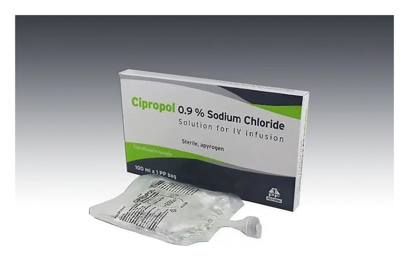

Cipropol 2 mg/ml I.V. İnfüzyon İçin ÇÖZELTI,100 ml Setsiz

Ne için kullanılır
KT · Bölüm 1• CİPROPOL poşet içerisinde piyasaya sunulmaktadır. Her bir 100 mL’lik poşet 200 mg, 200 mL’lik poşet 400 mg siprofloksasine eşdeğer miktarda siprofloksasin laktat içerir. • CİPROPOL’ün etkin maddesi olan siprofloksasin, florokinolon grubu bir antibiyotiktir. Antibiyotikler enfeksiyona neden olan bakterileri öldürmek için kullanılır. • CİPROPOL, 100 ve 200 mililitrelik torbalarda bulunur. Torba içerisindeki çözelti, renksiz ve berraktır. • Bakterilerin neden olduğu yüz kemiklerinin içindeki hava boşluklarının akut iltihabı (akut bakteriyel sinüzit), ve komplike olmayan idrar yolu enfeksiyonlarında alternatif tedavi seçeneklerinin varlığında ciddi yan etki riski nedeniyle kullanılmamalıdır. Buna ilave olarak idrar yolu enfeksiyonlarında antibiyogramla duyarlılık kanıtlanması gerekmektedir. • CİPROPOL, yetişkinlerde akciğer ve bronş enfeksiyonlarında, orta kulak iltihabı, sinüzitte, göz enfeksiyonlarında, böbrek ve idrar yolu enfeksiyonlarında, genital organların enfeksiyonlarında, mide-bağırsak sistemi ve karın içi enfeksiyonlarda, cilt ve yumuşak doku enfeksiyonlarında, kemik ve eklem enfeksiyonlarında, kanda meydana gelen enfeksiyonlarda, bağışıklık sistemi zayıflamış hastaların enfeksiyonlarında ya da enfeksiyon riskinin yüksek olduğu durumlarda, bağışıklık sistemi baskılanmış hastaların bağırsak enfeksiyonlarında kullanılır. CİPROPOL, 1-17 yaş arası çocuklarda komplike idrar yolu enfeksiyonları ve böbrek enfeksiyonlarının 2. ve 3. basamak tedavisinde, kistik fibrozisin P.aeruginosa adlı bakteriye bağlı akciğer alevlenmesinde kullanılır. Yetişkinlerde ve çocuklarda, solunum yoluyla geçen şarbon hastalığının ortaya çıkışını azaltmak ve ilerlemesini yavaşlatmak için de kullanılır.
Bu ilacı kullanmaya başlamadan önce bu KULLANMA TALİMATINI dikkatlice okuyunuz, çünkü sizin için önemli bilgiler içermektedir.
• Bu kullanma talimatını saklayınız. Daha sonra tekrar okumaya ihtiyaç duyabilirsiniz. • Eğer ilave sorularınız olursa, lütfen doktorunuza veya eczacınıza danışınız. • Bu ilaç kişisel olarak sizin için reçete edilmiştir, başkalarına vermeyiniz. • Bu ilacın kullanımı sırasında, doktora veya hastaneye gittiğinizde doktorunuza bu ilacı kullandığınızı söyleyiniz. • Bu talimatta yazılanlara aynen uyunuz. İlaç hakkında size önerilen dozun dışında yüksek veya düşük doz kullanmayınız. Bu belge 5070 sayılı Elektronik İmza Kanunu uyarınca elektronik olarak imzalanmıştır. Doküman https://www.turkiye.gov.tr/saglik-titck-ebys adresinden kontrol edilebilir. Güvenli elektronik imza aslı ile aynıdır. Dokümanın doğrulama kodu : 1Z1AxYnUyYnUyRG83RG83RG83S3k0 Bu belge 5070 sayılı Elektronik İmza Kanunu uyarınca elektronik olarak imzalanmıştır. Doküman https://www.turkiye.gov.tr/saglik-titck-ebys adresinden kontrol edilebilir. Güvenli elektronik imza aslı ile aynıdır. Dokümanın doğrulama kodu : 1Z1AxYnUyYnUyRG83RG83RG83S3k0